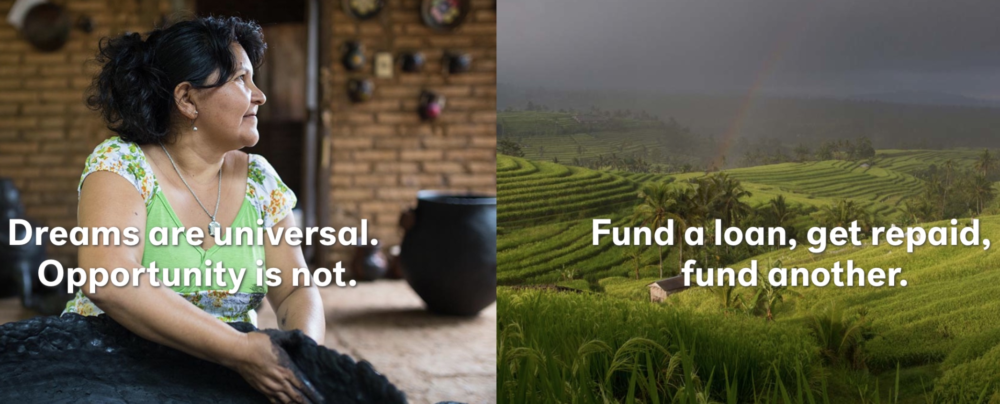

W201 Portfolio
Simon Hodgkinson
MIDS Fall 2017
Welcome

Abstract of my first cool idea
Record numbers of people in this country are overdosing on opioids, however, most deaths could probably be prevented by the timely administration of a cheap antidote. Unfortunately, the antidote itself is controlled drug, meaning that people (including first responders) require a prescription to possess it. Many states have tried changing their laws in various ways to make the antidote more widely available, but do these changes actually result in fewer overdoses? Can we measure the impact, and if so, which changes are most effective? Using a data set that shows the evolution of these laws across all states since 2000, along with overdose statistics, we can try to answer these questions.
Abstract of my second cool idea
Millions of people in emerging economies need access to small amounts of capital, while willing donors in mature economies have excess capital to lend. Microfinance initiatives attempt to link the two, in an effort to alleviate poverty in a sustainable way. However, without access to traditional data used in lending decisions (employment history, income, assets etc), it can be difficult to assess whether a loan is properly priced and is likely to be successfully repaid. This project would study outcomes for a large body of loan data, in an attempt to identify common traits that might be used to estimate credit risk in the absence of traditional measures.